Your AI Agent Just Did Something. Can You Prove It Was Okay?¶
A new kind of agent — the defendable agent — is roughly 85–90% built. Here's the complete picture, one organ at a time.
On Tuesday, an AI agent called Nora followed the risk-assessment playbook, drafted an assessment for a customer account, and downgraded their status. On Wednesday the customer complained. On Thursday your compliance officer walks over: What did Nora read? Why those documents and not the newer policy from March? What playbook did she follow — the current one? How sure was she? Which human signed off, under which policy?
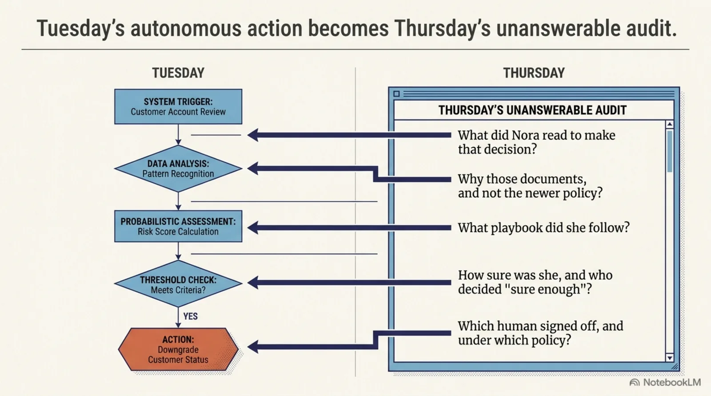
For nearly every AI agent deployed in 2026, the honest answer to all five is "we can grep the logs and guess." Fine when Nora summarizes meeting notes; not fine when she touches customer accounts, money, or medical records — and with the EU AI Act's record-keeping and human-oversight duties phasing in through 2026–27, "grep and guess" is turning from embarrassing into illegal for a growing class of systems.
This post is about the fix, and the fix is not a policy binder bolted onto an ordinary agent. It's a different kind of agent — one that can answer every one of those questions by construction — and the surprising part is how close it is. I'll defend a specific claim: the architecture of a defendable agent is roughly 85–90% built, mostly as running code, with a clearly-named last stretch and the reference runtime that ties it together.
What makes it a new species rather than an old agent in a compliance vest is one property: it is self-evidencing. Every part of it emits a written, checkable verdict at the moment it decides — not a log you reconstruct afterward, but a defense produced as a side effect of simply operating. No agent you run today does that. And to see how it's possible, we don't need a new abstraction — just a careful look at the thing you already picture when you hear the word "agent."
Grab a coffee. This one's a proper explainer.
Update — the last stretch is done. When this published, the defendable agent was ~85–90% built. It's now finished, open-source, and running end to end — and it even transacts money defensibly, blocking an autonomous agent mid-purchase for trying to overspend. See the reveal, with fourteen live demos: The AI Agent That Keeps the Receipts.
The agent you already picture¶
Close your eyes and picture an agent working. You already have the model:
An agent is a model, running in a loop. Each turn it reads some context, leans on what it remembers, follows the skills you gave it, forms an answer with some confidence, calls tools to act, occasionally checks with a human, and leaves a trail.
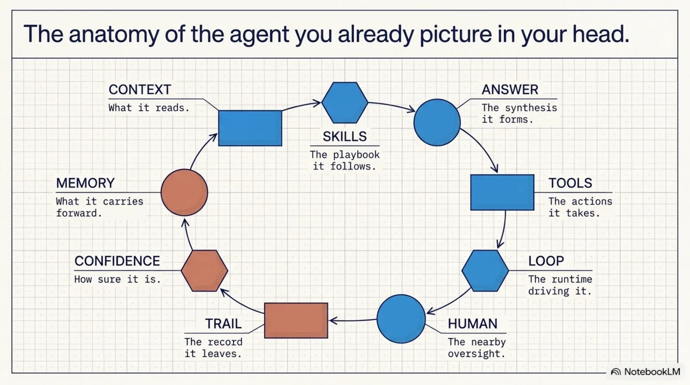
Nora is exactly this. And the uncomfortable secret of that familiar picture is that, in an ordinary agent, not one of those organs can be defended. A defendable agent is the same animal with a governor on every organ — each one turning a question you currently can't answer into a written verdict you can. Here's the whole tour on one page; the rest of the post is this table, slowed down:
| The organ | Ordinary agent | Defendable agent |
|---|---|---|
| The context it reads | fetched whatever matched | planner: 13 gates, each with a reason |
| The skills it follows | an unsigned file someone dropped in | governed unit + conformance check |
| The answer it forms | asserts, unverified | grounding: cite-or-it-didn't-happen |
| Its confidence | a vibe, unrecorded | a gate against your threshold |
| The tools it calls | any action, no scope | conformance: did it stay in bounds? |
| The human | approved: true |
named reviewer + policy, durable |
| The memory it keeps | ungoverned | declared, gated, forgettable |
| The loop that drives it | a black box | a runtime that emits every verdict |
| The trail it leaves | logs to grep | an audit spine that exports itself |
Let's walk it. For each organ: what the ordinary agent can't answer, and how the defendable one does — with a note, honestly, on whether that governor is live today or the last stretch.
A tour of the organs¶
![Every organ fails the Thursday audit — not a single part is defendable today: the same ring of nine organs, each drawn cracked and broken, annotated with what goes wrong — the retrieval layer fetched what matched with no opinion on whether it should have; a doctored playbook dropped into the shared library; pure LLM synthesis that may not follow from what it read; oversight decayed to an approved:true boolean that vanishes on server restart; a trail you cannot prove to a skeptic without trusting the agent's own account.](../../../../../assets/images/da-every-organ-fails.webp)
The context it reads — live¶
The ordinary agent's first move is to pull in material, and it has no opinion on whether it should have. Was pricing-internal-2024.md superseded in March? Restricted to finance? Expired?
The defendable agent's knowledge declares its own rules in a small knowledge.yaml beside the content — audiences, validity windows, what supersedes what, even per-read cost:
units:
- id: risk-policy-2026
path: policies/risk-assessment.md
audience: [agent, support-staff]
supersedes: risk-policy-2024
triggers: [risk, assessment, downgrade]
A planner — pure code, no LLM, no randomness — walks every unit through 13 gates in order (audience → not_for → temporal → deprecated → supersession → relevance → attestation → payment → access → strict → max_units → money_budget → context_budget), each passing or failing with a written reason: skipped risk-policy-2024: superseded by risk-policy-2026. Same task + same manifest + same date = identical plan, every time — rerun it in front of an auditor and get the same answer. This is the agent-native ontology that general policy engines lack: gates that understand supersession, budgets, audiences, and time. What did she read, and why — answered.
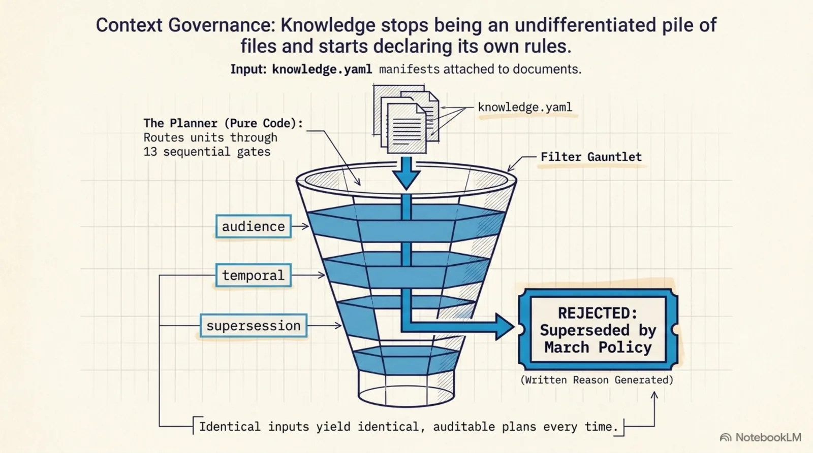
The skills it follows — the last stretch¶
This is the organ almost everyone forgets, and naming it is half the contribution. Nora didn't invent the downgrade — she ran a playbook, a reusable skill that tells her how to do a whole class of task. Where did it come from? Is it current? Did someone drop a doctored one into the shared library last Tuesday?
Knowledge is declarative — you cite it. A skill is imperative — you execute it. A stale document yields one bad citation; a stale or poisoned skill reshapes many actions at once. So in a defendable agent a skill is a governed unit too: it declares itself like knowledge (audience, validity, supersession, signature), its selection runs through the same 13 gates — a stale or unsigned playbook skipped with a written reason — and its execution is checked by the conformance gate below. The mechanism is the one we already built, aimed one organ over. (Design: the procedural plane, with kcp-agent#100 and kcp-harness#38.) Which playbook, and was it authorized — answered.
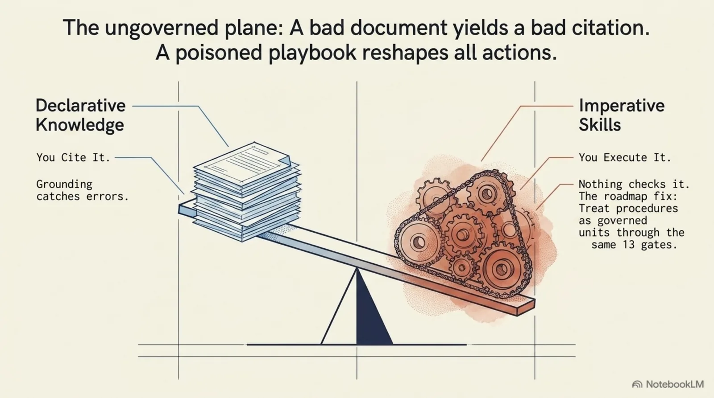
The answer it forms — live¶
The synthesis step is pure LLM; it can assert things its sources don't support. Checking it, though, is disciplined. Grounding asks a separate verifier which loaded document supports each claim, then pure code adjudicates: the cited unit must have been loaded, and its content hash must match. A verifier that hallucinates a citation proposes into a void. Attribution is a proposal; grounding is adjudicated. Unsupported claims aren't deleted — they're surfaced as gaps. Does what she said follow from what she read — answered.
Its confidence — live¶
Nora might have read exactly the right documents and still reached a shaky conclusion. A separate, post-synthesis gate settles it: the model's self-report ("0.92") is one proposal, an independent skeptic evaluator is another, and deterministic code takes the minimum and compares it to your org's threshold. A cocky self-report can't outvote the skeptic; no signal at all fails closed; every raw number is preserved so the threshold can be calibrated against real outcomes. How sure, and who set the bar — answered.
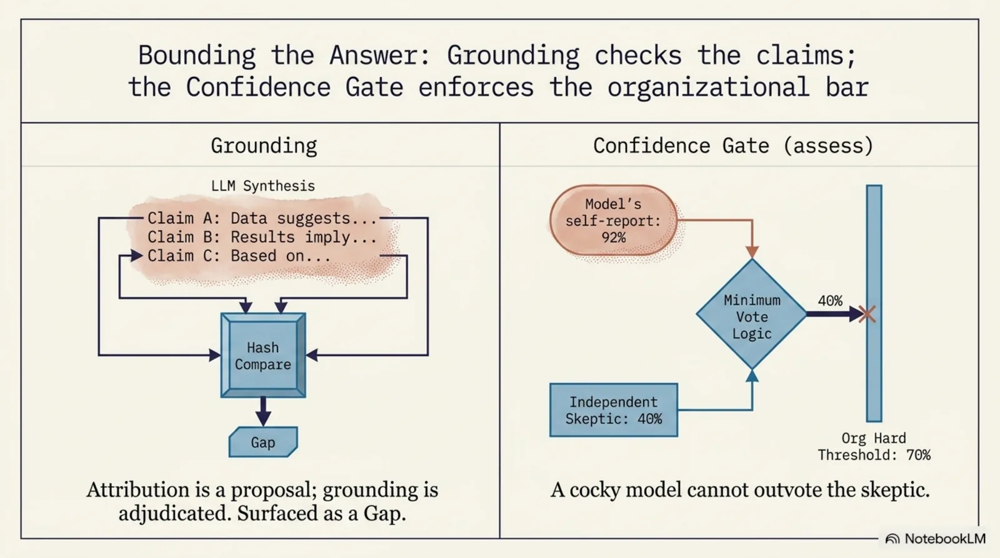
The tools it calls, and the human — approval live, conformance the last stretch¶
Two governors meet at the moment of action. When policy demands a human — or a gate says hold — a durable ticket opens with a real state machine (pending_review → approved | dismissed | expired), and three rules make it evidence instead of theater: a rule-matched call is held no matter what (the human outranks the automation); approved: true alone is rejected — a resolution requires a named reviewer and a policy citation; and tickets outlive the session, so a human can answer three days later and the agent honors it on retry.
And the action itself is checked against the playbook it claimed to follow — the conformance gate, grounding for actions: deterministic code adjudicates that Nora's actual tool-call sequence stayed inside the declared scope of an authorized, current skill; deviations surface as gaps. "I followed the approved procedure" is a proposal; conformance adjudicates it. Who allowed it, and did it stay in scope — answered.
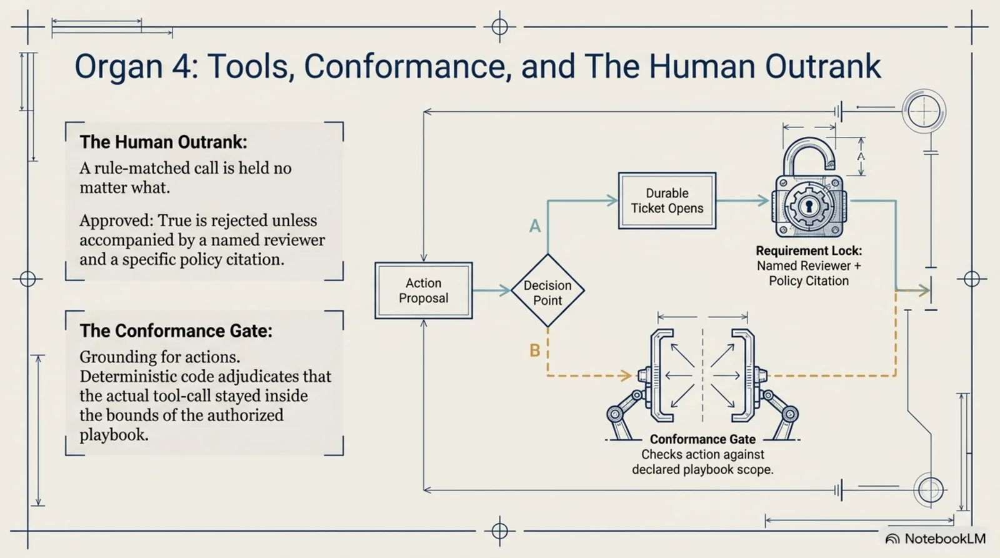
The memory it keeps — the last stretch (earliest)¶
What may be remembered — retention, provenance, right-to-forget — is the same shape of problem: declare it, gate it, evidence it. It's the earliest-stage organ, named and scoped, slotting into the same machinery.
The loop that drives it — the last stretch (the capstone)¶
Everything above is enforced by kcp-harness, an MCP proxy — one door into the building, fail-closed. But a proxy governs at the boundary: it sees tool calls, not which skill was selected or what the model concluded. To govern the whole animal you must reach inside the loop. So the deepest piece is a host-neutral runtime-depth contract — the events a loop must expose (skill_selected, plan_formed, conclusion + confidence, action_trace, verdict_emitted, under one correlation id) to be fully governable (knowledge-context-protocol#133). The bet is the contract, not the vendor — any runtime can implement it; the proxy stays the portable fallback.
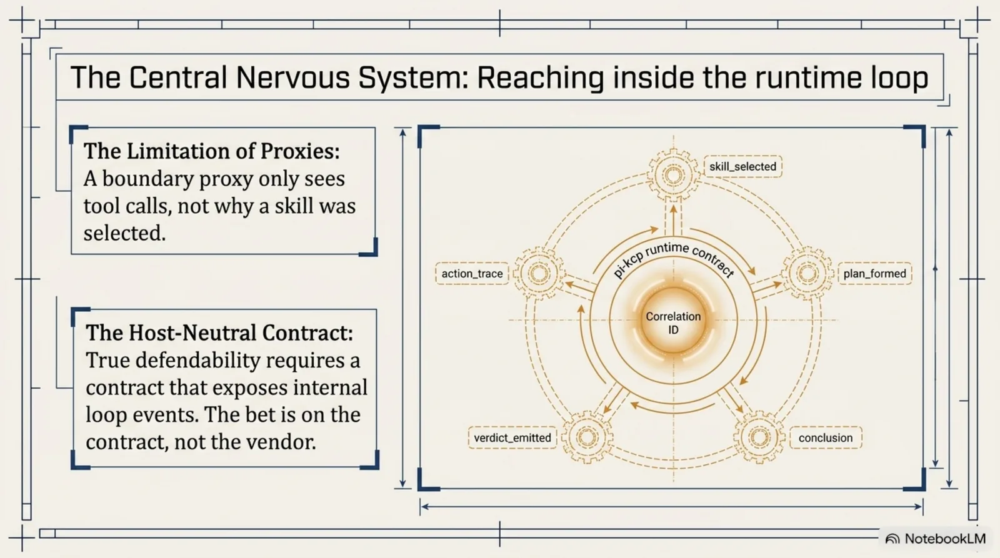
pi-kcp — a Cantara project — is the reference implementation: a KCP runtime riding the Pi.dev agent loop (sandboxed by TerteForm), where the planner, the gates, the memory, the skills, and the evidence spine finally compose into one governed loop instead of a toolbox you wire by hand. It is what turns "a set of governance libraries" into "a defendable agent." Offered as one reference bet, not the only one — Claude Code or a bespoke loop could implement the same contract. Can anyone see inside the loop — yes, by design.
The trail it leaves — live¶
Underneath all of it, an append-only log where every stage lands as a structured event, mapped by an exporter onto compliance frameworks (SOC 2 and ISO 27001 today; ISO 42001 and EU AI Act article-mapping next) and stitched toward one evidence spine per action. This is the payoff of the whole philosophy: compliance artifacts as a side effect of normal operation. Nobody writes the audit report — operating the agent writes it. Can you prove all of it, later — answered.
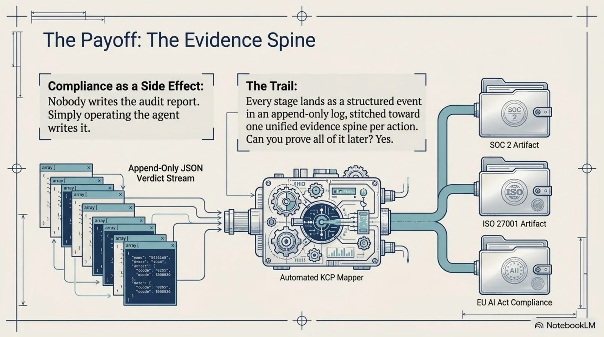
One discipline runs through every organ — call them the four laws: the model proposes, deterministic code adjudicates; fail closed; every verdict is binary with a written reason; evidence is generated at decision time, never reconstructed later.
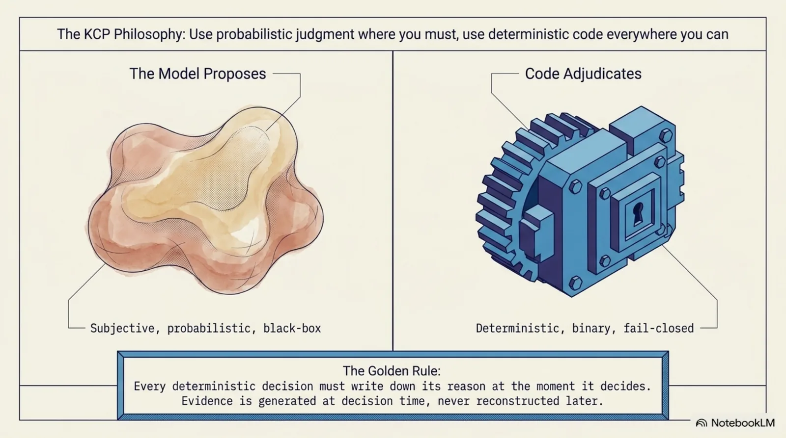
State of the build — where the last 10–15% is¶
A picture this clean invites the fair question: how much of it actually runs? Transparently — because a completeness claim you can't check is just a claim:
Live today, battle-tested across real client codebases: the entire defendable-decision spine — the 13-gate planner (context), grounding (answer), the confidence gate (conclusion), durable approval tickets (the human), and the append-only audit log with SOC 2 / ISO 27001 export (the trail), all enforced through the fail-closed kcp-harness proxy. That's the majority of the animal, and it's not a demo: npm i -g kcp-harness and watch audit.jsonl fill.
The last stretch — designed, filed as problem-statements-before-schemas, being built: the procedural plane (skills as governed units) and its conformance gate — the one genuinely new gate; runtime depth — the host-neutral contract and pi-kcp as the runtime that composes everything into one loop; and memory, the earliest-stage organ.
Weight it by the spine and I'd honestly put us at 85–90% of a genuinely new kind of agent. The core — govern the decision, evidence every step — is done and running. What remains extends the same discipline to two more organs and deepens it into the loop; none of it needs a new philosophy.
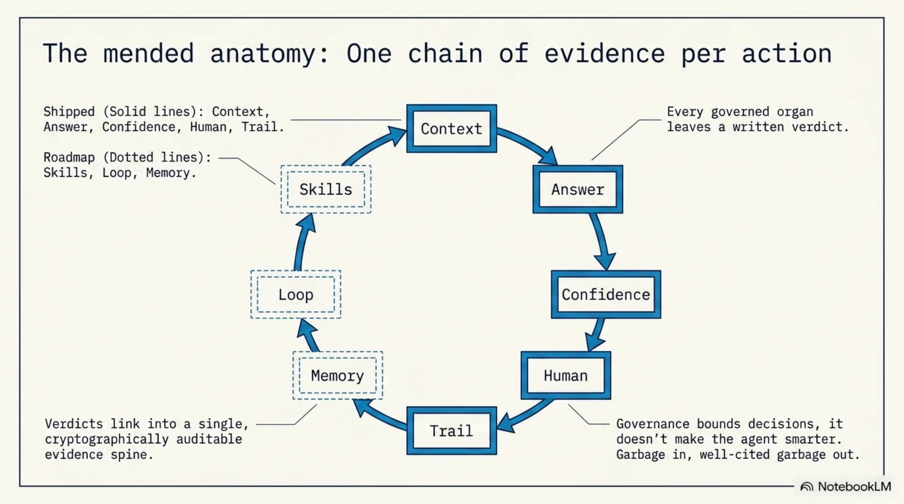
And the caveats that don't move with implementation status: it doesn't make Nora smarter (a well-governed mediocre conclusion is just defensibly mediocre); it doesn't verify your knowledge is true (a signed, current, wrong policy gets followed defensibly off a cliff); reviewer identity is asserted, not yet cryptographically proven (#35); thresholds start as guesses with good bookkeeping (kcp-dashboard#31); and it's per-agent while the world goes to fleets (#36).
Why this, and why now¶
You still want the ordinary toolbox — for the organs it guards. Observability is the flight recorder (records everything, judges nothing). Guardrails are the bouncer (catches PII and jailbreaks, blind to whether a decision was allowed). Sandboxes are the walls (coarse, no reasons, no evidence). Policy engines are a rulebook with no agent semantics. Evals are the bar exam (tells you the agent tends to behave, not what it did today). Human-in-the-loop degrades into cookie-consent theater. Every one guards a real organ; none of them knows your policy, explains every decision, and produces evidence a skeptic can check — and none has any opinion on the skills the agent runs. A defendable agent fills exactly that empty column. It doesn't replace the others; it's the organ they all leave undefended.
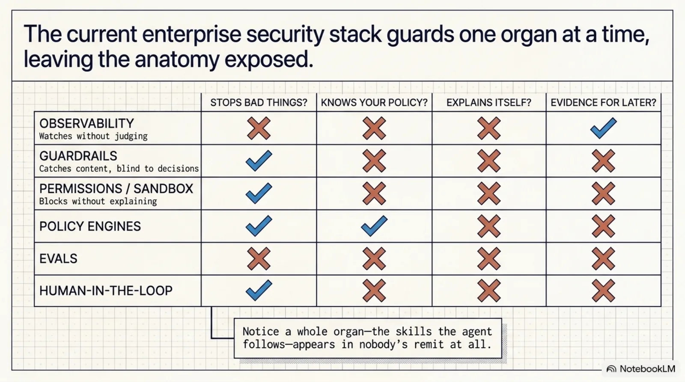
And the timing isn't an accident. Agents got hands (the blast radius went from "awkward paragraph" to "production incident"), got autonomy (fleets running overnight, no human watching each step), and the law caught up (EU AI Act Articles 12 and 14 — real records, real oversight). "Trust us" stopped closing enterprise deals. Self-evidencing agents are the answer that survives an audit.
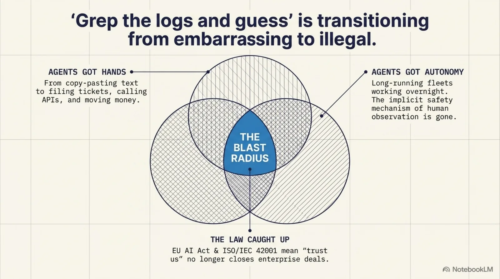
This isn't theoretical — it runs in a rig¶
The discipline has two surfaces. At runtime, KCP governs a deployed agent like Nora. At development time, the same four laws govern the agents that build the software — I run a rig I call ExoCortex across real client codebases: cross-model adversarial review, a verify-gate, end-to-end tests as the behavior truth, provenance on everything read. (More in "Evidence isn't enough: the independence problem in agentic development".) And the skills organ? I hit it the hard way: ExoCortex already runs 561 skills as a read-only mirror of origin/dev — never edited in place, synced only through a reviewed PR. A governed skill corpus with provenance and versioning, built by hand because the tooling didn't offer it yet. Living proof the last stretch is real, and buildable.
Come build the last 10%¶
Since publishing, that last 10% shipped. The procedural plane, the conformance gate, the runtime-depth contract, and the pi-kcp runtime linked below are now built and released — see The AI Agent That Keeps the Receipts. The problem statements below are kept as the record of how it was designed in the open; come argue with what's next.
Everything on the spine is running code, Apache-2.0:
- Play in the browser (no install): the live governance dashboard demo — press 👤 Human-approval hold and watch a ticket get requested, resolved by a named reviewer, and honored. Or the agent thought-graph.
- Run the narrated demos:
git clonekcp-agent, thennode examples/demos.js— nineteen scenarios driving the real planner, nothing mocked, includingsecond-opinion(the confidence gate). - Govern an actual agent:
npm i -g kcp-harness,kcp-harness init,kcp-harness integrate claude-code(or cursor, copilot, windsurf, cline, continue, crush, openclaw, pi). - Argue with the last stretch: the organs still being built are open problem statements, filed before any schema — the procedural plane, its conformance gate, and the runtime-depth contract. If a skill isn't the right atomic unit, or determinism is the wrong hill — come say so.
The intern is already hired. She started months ago; she's reading your documents, running your playbooks, and taking real actions today. The only open question is whether, on Thursday, your answer is a shrug — or a chain of written verdicts, one per organ, ending in a named human, a policy citation, and the current, authorized playbook she followed to get there.
You already knew what an agent was. Now you know what a defendable one is — and that it's most of the way here.
Capability is abundant. Defensibility is scarce.
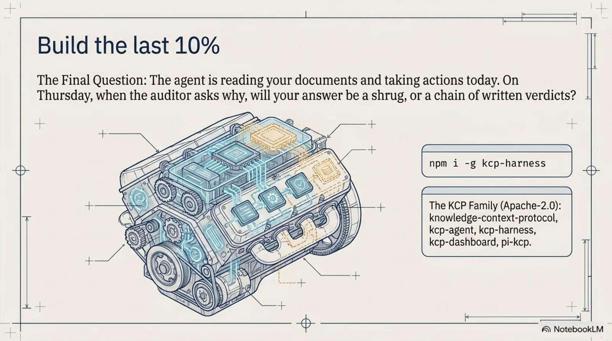
The KCP family: knowledge-context-protocol (the spec) · kcp-agent (deterministic planner + reference agent) · kcp-harness (MCP compliance proxy) · kcp-dashboard (live visibility) — Apache-2.0, by eXOReaction under Cantara. The pi-kcp reference runtime is a separate Cantara project.